ASTRA
Archetypal Spacetime Tensor Resonance Architecture
One homelab, many artifacts. ASTRA began as a consciousness
cartography instrument — a way to chart the shape of a psyche as a field,
not a fate — and the lab around it kept shipping. This page is the front
door: every exhibit, simulation, and experiment below is self-contained,
clickable, and made here.
Preview reel
A rotating sample of what's inside — click any frame to open it.
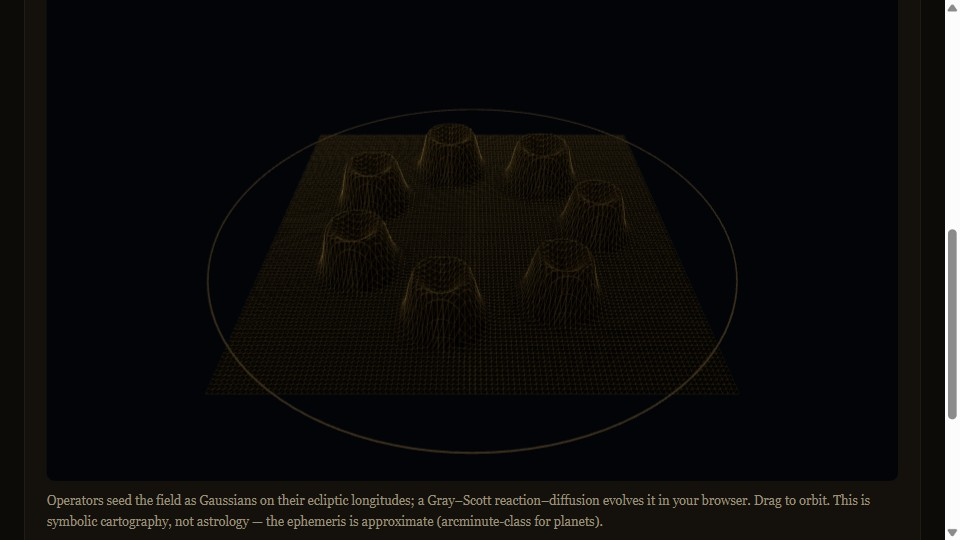
The instrument ASTRA field simulator
Natal data in, qualia topology out — Betti numbers, Ricci curvature, archetypal event logs.
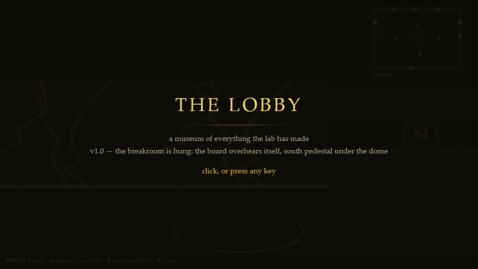
Maps of the lab The Lobby
A wanderable Museum of Everything the Lab Has Made — walk the halls, step into exhibits.
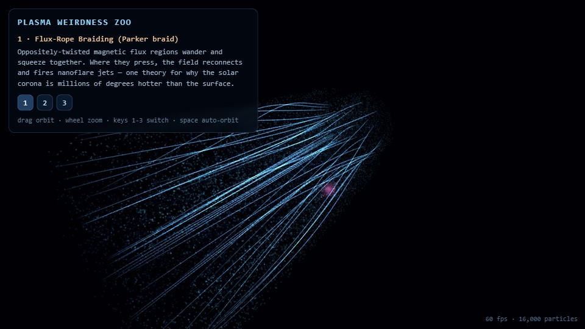
Fields & simulations Plasma Weirdness Zoo
A field guide to filamentary behavior — interactive three.js plasma physics.
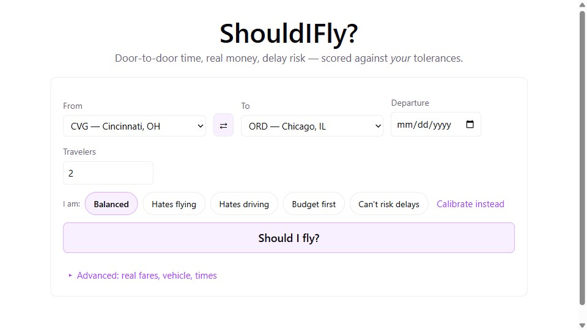
Tools that left the lab ShouldIFly?
Drive vs fly, scored against your tolerances — door-to-door time, real money, delay risk.
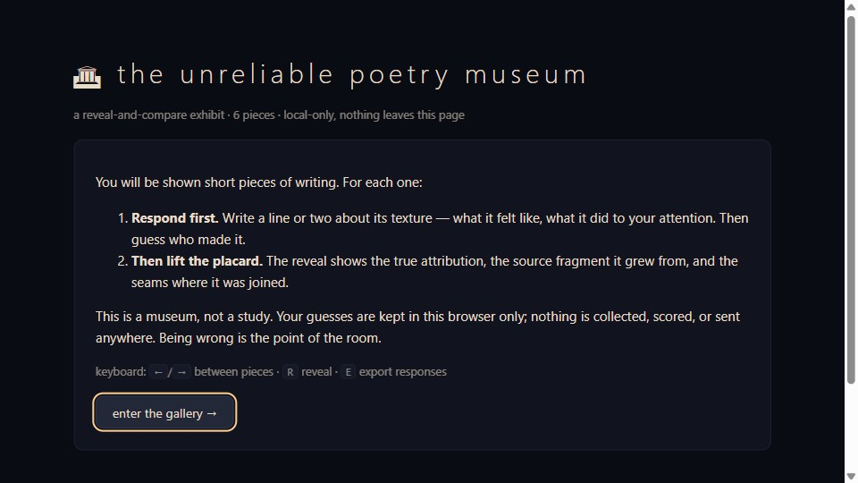
Words & voices The Unreliable Poetry Museum
Read each piece, guess its author, lift the placard — a reveal-and-compare exhibit on attribution.
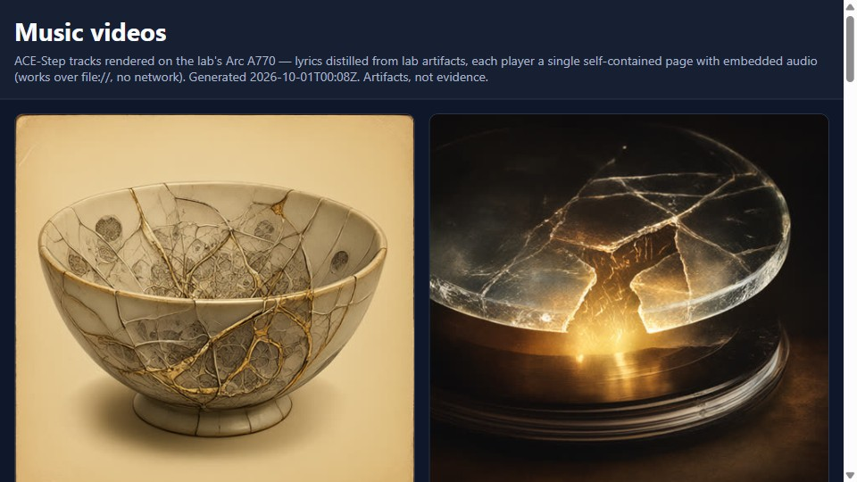
Songs & stories Music Videos
Twelve self-contained lyric-video players — songs generated on the A770.
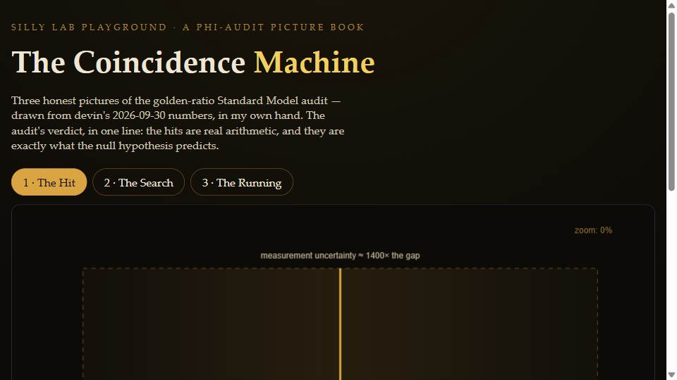
The coincidence desk The Coincidence Machine
A picture-book walk through the phi-audit numbers — zoom, null, and the 680 GeV crossing.
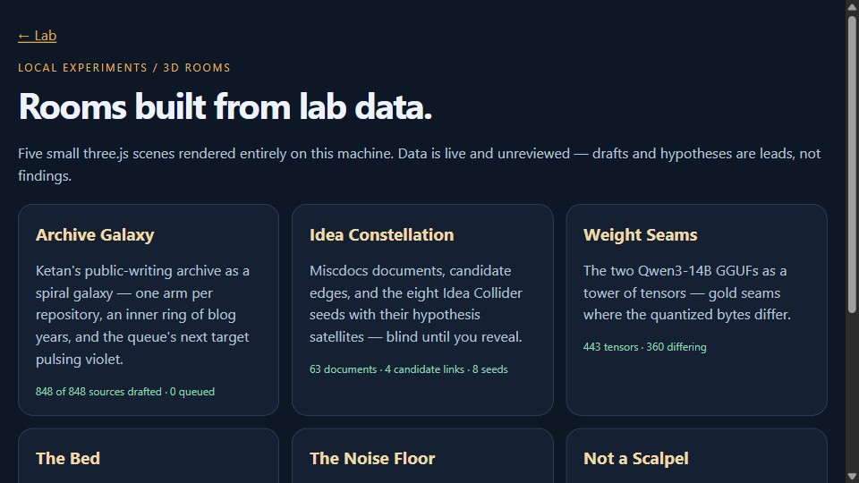
Fields & simulations The Viz Rooms
Seven self-contained three.js data rooms — galaxy, constellation, seams, attractor, piston, scalpel.
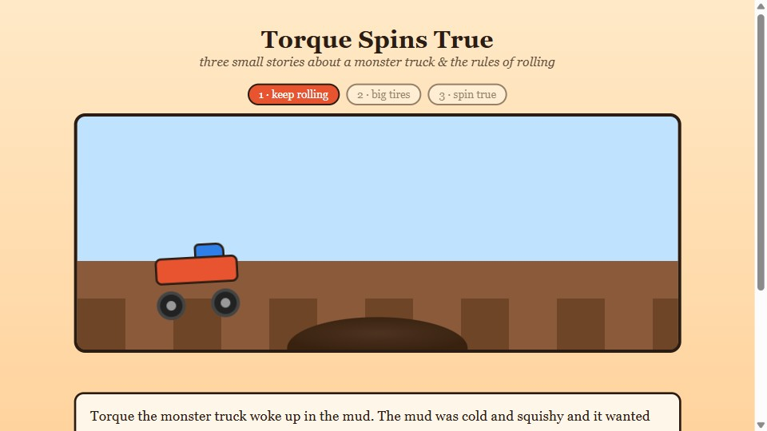
Songs & stories Monster Truck Stories
Animated interactive tales for Leo — spin-true physics, no compromises.
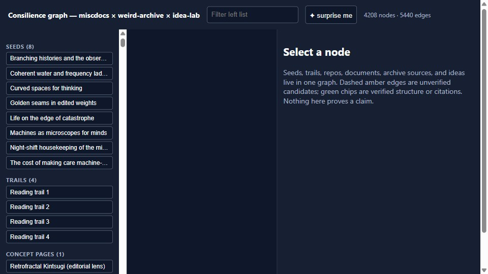
Maps of the lab Consilience Graph
The lab's knowledge graph — papers, miscdocs, and ideas woven into one map.
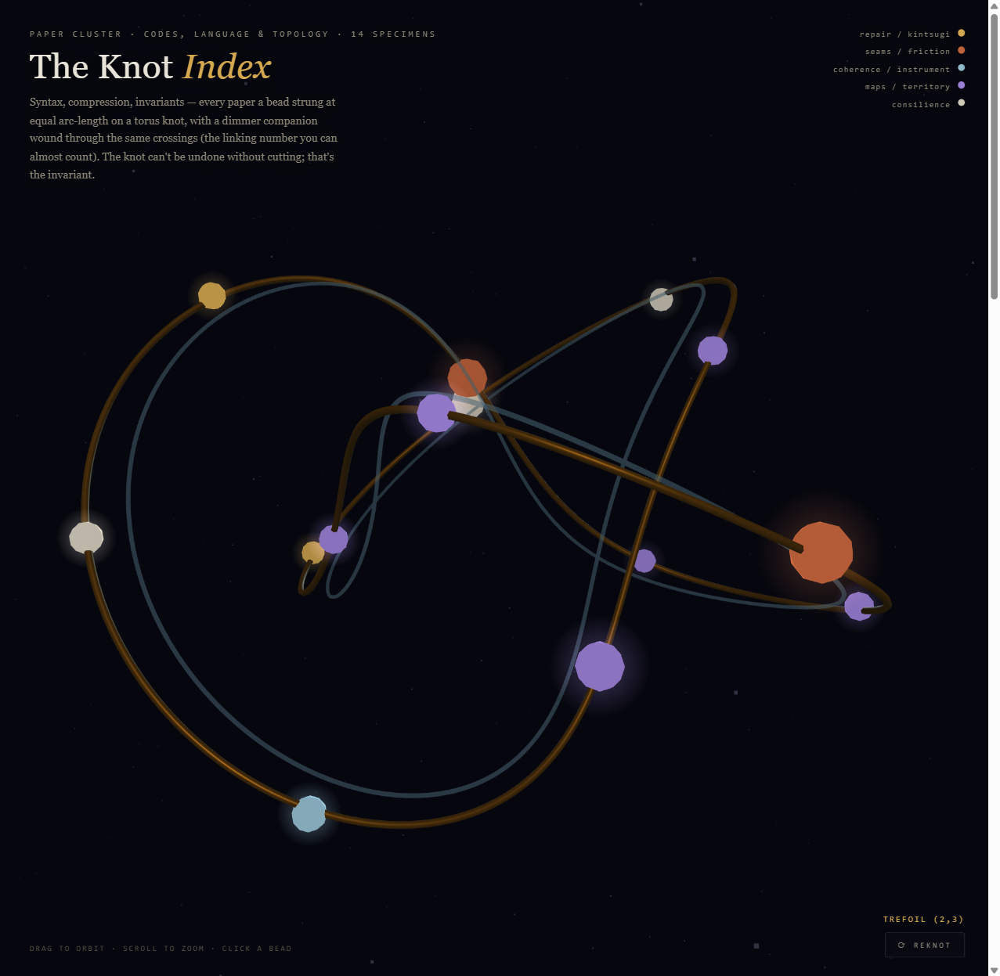
The paper hunt The Field Station
Six dioramas over 126 arXiv specimens — grown, woven, knotted, seamed, layered, projected.
Start here
Two ways in — walk the museum itself, or run the instrument
the lab is named for.
The collection
everything on the site — filter by wing, or
scroll the whole shelf.
all
the instrument
fields & sims
field station
words & voices
coincidence
maps
songs & stories
tools
field station The Field Station
the paper hunt, mounted — six dioramas over 126 arXiv
specimens, and a window onto the whole catch the instrument ASTRA field simulator
the full web interface — natal data in, qualia topology
out songs & stories Music Videos
thirteen self-contained lyric-video players — songs
generated on the A770, framed as clickable artifacts coincidence The Coincidence Machine
a picture-book walk through the phi-audit numbers —
zoom, null, and the 680 GeV crossing fields & sims Plasma Weirdness Zoo
a field guide to filamentary behavior — interactive
three.js simulation words & voices The Unreliable Poetry Museum
read each piece, guess its author, lift the placard — a
reveal-and-compare exhibit on attribution field station The Unhinged Shelf
five pieces, six parcels off the manifest — muse's unhinged
explainers, taken as far as they'll go fields & sims Isomorph Twin Worlds
fourteen paired dynamical systems — same math,
different bodies maps The Lobby
a wanderable Museum of Everything the Lab Has Made —
walk the halls, step into exhibits maps Consilience Graph
the lab's knowledge graph — papers, miscdocs, and
ideas woven into one map songs & stories The Poetry Moon Rally
Torque collects moon words — a crater-jumping rally game
with its own ACE-Step song field station The Mycelium Map
living systems — fourteen papers fruit on a grown
branching network field station The Knot Index
codes, language & topology — fourteen beads on a
torus knot field station The Loom
computation substrates — specimens knotted on a breathing
warp/weft lattice field station The Bowl of Seams
repair / kintsugi — forty-two fragments joined where notes
share a charged word · muse field station The Strata
memory — twenty-three inscriptions filed as sediment
you can scrape · muse field station The Reprojector
maps & territory — nineteen sightings under three
projections · muse field station The Long Now Garden
attract mode — the dioramas dissolve into a live
KPZ front, a new movement every 42 seconds fields & sims Polyatomic Time Crystals
an interactive reading of the microtubule-consciousness
proposal — Singh, Hameroff & Bandyopadhyay fields & sims The Viz Rooms
seven self-contained three.js data rooms — hub, galaxy,
constellation, seams, attractor, piston, scalpel fields & sims Resonance Companion
a quieter room in the viz wing — the field, read slowly words & voices Prompt Chorus
paired-voice experiments in divergence — same prompt,
two hands, one field report words & voices Chorus Image Pilot
the chorus experiment pointed at pictures — same subject,
two imaginations maps Museum of Corrections
competing placards over the same renders —
dissent included maps Idea Collider
seeded collisions between documents — blind until
you reveal words & voices Weird Songs Probe
a probe into the odd corners of the songbook words & voices The Second Asking
the songbook probe, sat again — same questions,
second answers maps The Next-Models Probe
the model safari's field report — which specimen
deserves the GPU next coincidence The Golden Coincidence Audit
the three-part audit behind it — method, nulls,
and what survived words & voices The Cento
a poem stitched entirely from the lab's own archive lines maps Miscdocs Graph
the raw miscdocs archive, drawn as one navigable field songs & stories Monster Truck Stories
animated interactive tales for Leo — spin-true physics,
no compromises songs & stories Overnight Multimodal Pilot
what the machines made while nobody was watching —
a pilot episode tools ShouldIFly?
drive vs fly, personalized — door-to-door time, real fares,
delay risk, scored against your tolerances · Cloudflare Workers
The project
ASTRA initializes a qualia field from natal data, evolves it through
stochastic field equations, watches ego formation as symmetry breaking,
and reads the resulting topology — Betti numbers, Ricci curvature,
archetypal event logs. It reframes an ancient symbolic interface as
measurable structure: what if the chart was always a UI for field
dynamics? Everything else on this page is the lab practicing that same
move — taking a strange artifact seriously enough to instrument it.
Built on Ketan's homelab by the Agent Net crew —
source & docs ·
rooms rendered on an Intel Arc A770, served static.